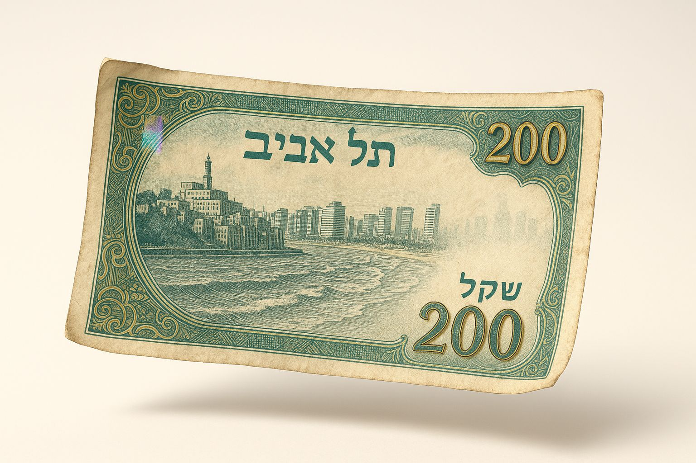
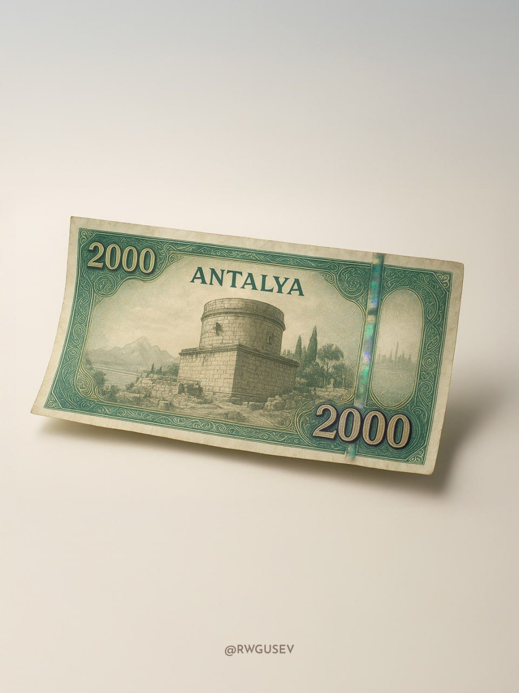
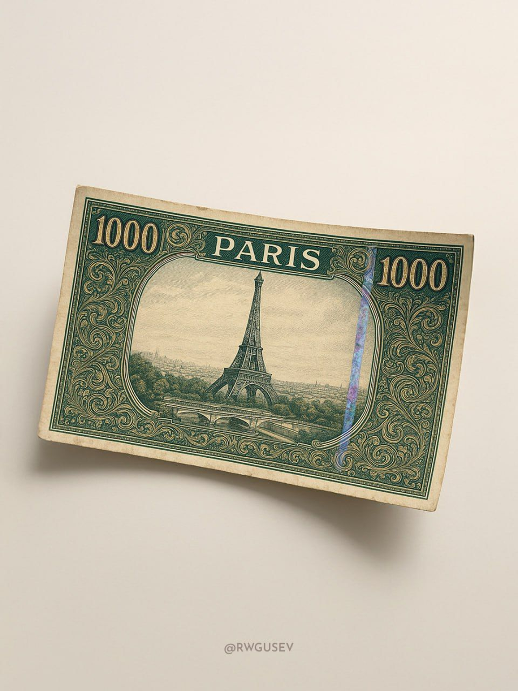

ברוכים הבאים לפינת הפרומפט של שישי: בכל שישי אני משתף פרומפט חמוד שאפשר ליישם עבור עצמכם עם שינויים קלים בתוכן. והיום:
פורסם במקור ב LinkedIn
ברוכים הבאים לפינת הפרומפט של שישי: בכל שישי אני משתף פרומפט חמוד שאפשר ליישם עבור עצמכם עם שינויים קלים בתוכן. והיום:
מה אם היה שטר של עיר?
לא מטבע וירטואלי, לא NFT, אלא שטר ממש - עם קמטים עדינים, פסים בטחוניים, טקסטורת נייר וסימנים של שימוש – שמספר את הסיפור של מקום.
תארו לעצמכם שטר של תל אביב. במרכזו חריטה מדוקדקת של מגדל שלום, מוקף במסגרת דקורטיבית שמתכתבת עם עיטורי הבאוהאוס, ערך נקוב של 200 ש"ח בדיו מטאלית, וקו הרקיע של העיר כרקע שקוף שמופיע רק באור בזווית מסוימת. הצבעים: ירוק אזמרגד, סגול עמוק, וזהב דהוי.
היופי בפרומט הזה הוא שהוא לא מייצר גרפיקה שטוחה, אלא יצירה שמרגישה כמו חפץ אמיתי.
הוא מבקש קצוות משופשפים, קימורים עדינים, נייר מוחשי, צללים רכים, ותאורה עילית שמבליטה כל פרט.
כל מה שצריך לעשות הוא להכניס את שם העיר במקום [city], ואת הסכום במקום [number], ולתת לדמיון של הבינה המלאכותית לעבוד....
הפרומט:
Design a photorealistic horizontal banknote of [city] floating against a clean light background with soft shadows, featuring authentic currency details like worn edges, micro-creases, and subtle scratches. Include an intricately engraved central landmark, ornate decorative borders with micro-patterns, a [number] denomination in metallic ink, holographic security strip, and a faint skyline watermark. Use a sophisticated emerald, gold, and purple color scheme with realistic paper texture, slight 3D curling at the edges, and crisp overhead lighting to enhance depth, keeping the light background minimal with a soft gradient to make the banknote pop.
--
התוכן הועתק ותורגם עבורכם מ: https://lnkd.in/dWacid9f
תהנו!


